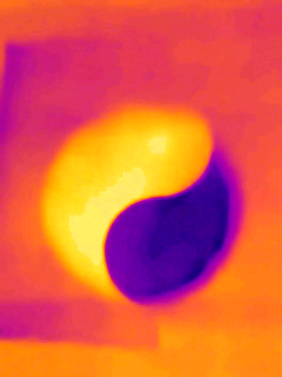

|
 |
Thermographer: Charles Xie Description: Evaporation cools a cup of water. Condensation warms a piece of dry paper placed on top of the cup. These opposite effects can be used to create a yin-yang pattern. Tap to download the video. |